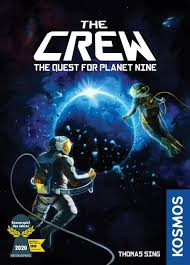
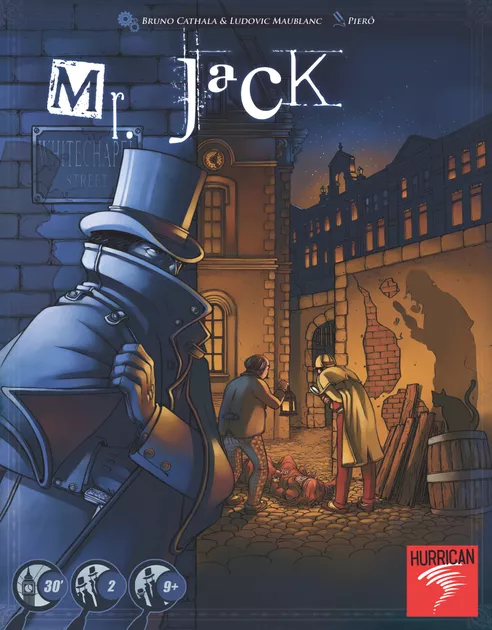

BRETTSPILLANBEFALINGER
Jeg er brettspillnerd, og har så mange spill jeg vil spille med deg. Jeg vil også få deg hekta på spill selv. Derfor overrekker jeg deg herved fem anbefalinger du bør prøve!
The Crew
I The Crew: The Quest for Planet Nine, er man astronauter på ukjente romeventyr. Gjennom 50 oppdrag skal man som et lag finne sannheten om den ukjente Planet Nine. Spillerne får en rekke felles men individuelle oppgaver med økende vanskelighetsgrad. Det handler om å samle riktige stikk til riktige spillere.
Mr. Jack
1888 - Whitechapel, London.
Natten dekker smugene i mulm og mørke, så kun få områder lyses opp av gatelyktenes skjær. Åtte etterforskere er samlet for å fange Mr. Jack, som stadig er på frifot. Men Mr. Jack er meget utspekulert: Han utgir seg for å være en av etterforskerne...
Mr. Jack er et asymmetrisk spill for to spillere. Hver spiller har forskjellige mål: Den ene påtar seg rollen som detektiven, mens den andre er Mr. Jack. Detektiven skal avsløre Mr. Jacks identitet og fange ham. Mr. Jack forsøker å komme seg unna i ly av mørket mens han gjør alt han kan for å forsinke etterforskningen.
Ved hjelp av deduksjon og ved å flytte karakterene inn og ut av gatelyktenes skjær reduserer detektiven antallet mistenkte og strammer løkken om halsen på Mr. Jack. Kan han fange skurken innen avslutningen av den åttende runden?
Cascadia
I dette spillet konkurrerer man om å bygge opp det mest harmoniske økosystemet. Velg ut og tilføy habitater til ditt miljø. Terrenget skal også befolkes med dyreliv for å skape et godt og mangfoldig økosystem.
Målet er å skape sammenhengende korridorer i terrenget ved å matche elver, prærie, våtmarks-områder, skoger og fjell. Habitatene understøtter forskjellig dyreliv, som deretter skal utplasseres.
Hvem får oppbygget det beste økosystemet?
Hotel Samoa
I dette spillet er spillerne hotelleiere på den rolige og vakre øya Samoa. Øya er en populær turistdestinasjon og hver uke kommer det besøkende fra mange forskjellige land. For hotelleierne handler det så om gi disse turistene deres livs opphold - og selvfølgelig loppe dem for mest mulig penger!
Pandemic Legacy: season 1
Verden lider en grufull skjebne hvis vi ikke utrdydder sykdommene som herjer rundt I verden.
Fire fryktelige infeksjonssykdommer truer med å utrydde hele verdens befolkning. Ved å spille klokt, kan man sikre seg at sykdommene ikke brer seg ytterligere og til sist få utryddet dem helt.
Hver spiller har forskjellige egenskaper i spillet, og ettersom det er et legacy-spill, må en handle smart, for alle valg påvirker spillets framtid.